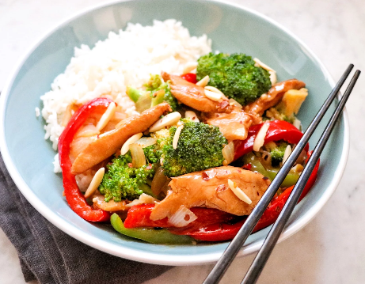

This is the most amazing thing you could ever cook in your life.
Delicious, savory, and visually enticing chicken and
broccoli stir-fry recipe! This is a double recipe
because leftovers are fantastic and the single
recipe never seems to be enough! Halve the recipe if
desired. Serve with hot cooked brown or white rice.
Ingredients
- 6 tablespoons soy sauce
- 3 tablespoons cornstarch, divided
- 4 large skinless, boneless chicken breasts, cut into thin strips
- 2 cups boiling water
- 1.5 tablespoons instant chicken bouillon granules
- .5 teaspoon ground ginger
- .25 cup canola oil
- 2 tablespoons sesame oil
- 4 cups fresh broccoli florets
- 1 medium red bell pepper, cut into thin strips
- .5 green bell pepper, cut into thin strips
- 1 medium onion, diced
- 2 tablespoons minced garlic
- .5 teaspoons curshed red pepper
- 1 cup toasted slivered almonds
Directions
- Combine soy sauce and 1 tablespoon cornstarch in a glass bowl or zip-top bag.
Add chicken; stir to coat. Remove all air from baggie before sealing,
or cover the bowl. Refrigerate at least 30 minutes.
- Combine boiling water and bouillon granules in another bowl,
stir until dissolved. Add remaining cornstarch and ginger;
stir to combine.
- Heat half of the canola oil and 1 tablespoon sesame oil to
365 degrees F (185 degrees C) in an electric skillet or in a heavy skillet
over medium-high heat. Add broccoli, bell peppers, onion, and garlic.
Stir-fry until crisp-tender, 5 to 7 minutes. Remove from the skillet
with a slotted spoon to a serving dish.
- Heat remaining canola oil and sesame oil in same skillet
to 365 degrees F (185 degrees C) or medium-high heat.
Add chicken mixture and crushed red pepper.
Stir-fry until chicken is no longer pink in the centers and juices run clear,
7 to 10 minutes. Return vegetables to the skillet.
Add bouillon mixture. Stir until thickened. Stir in optional almonds.